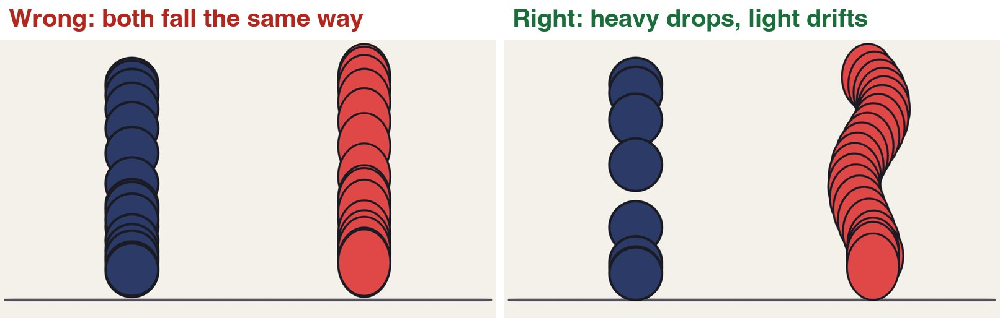
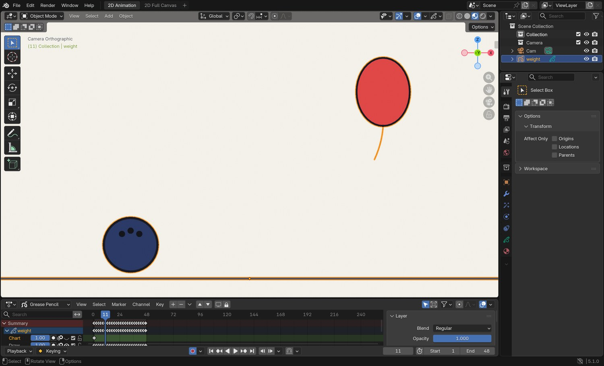
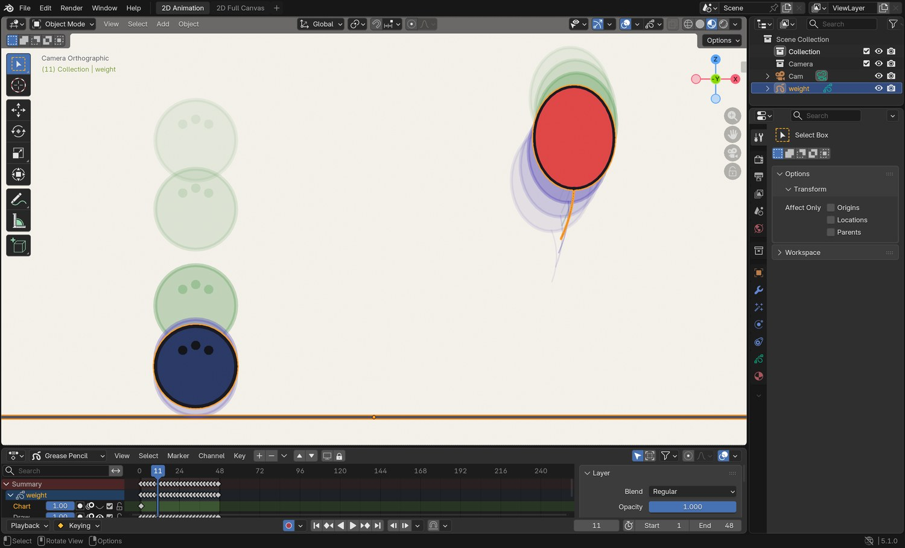
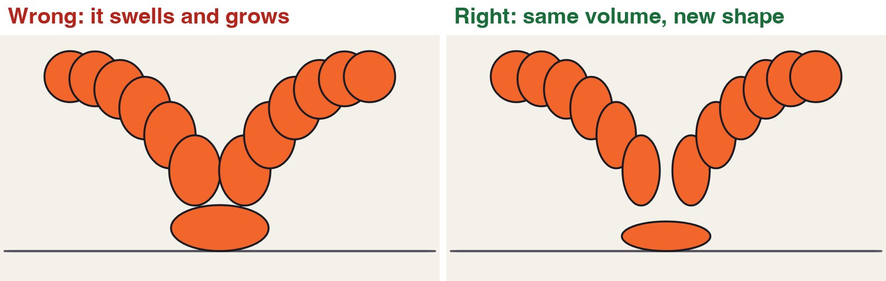
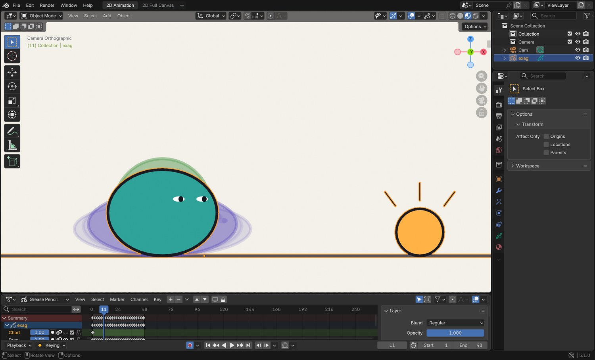
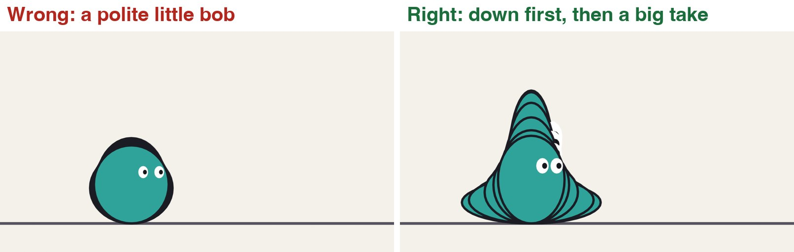
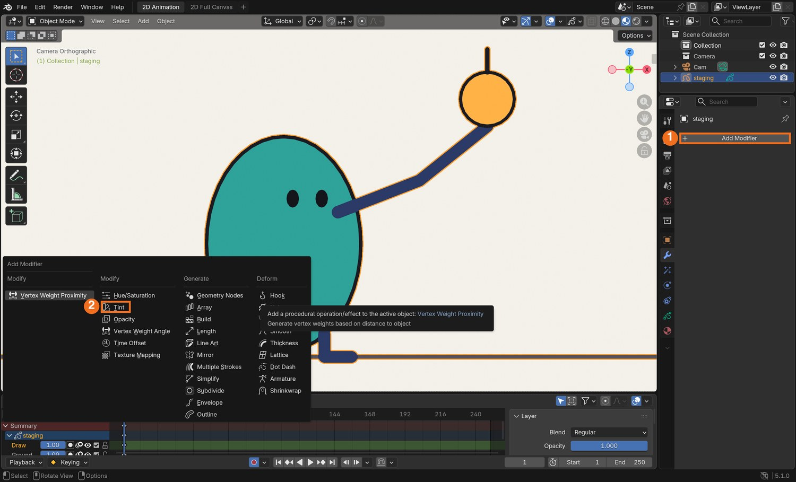
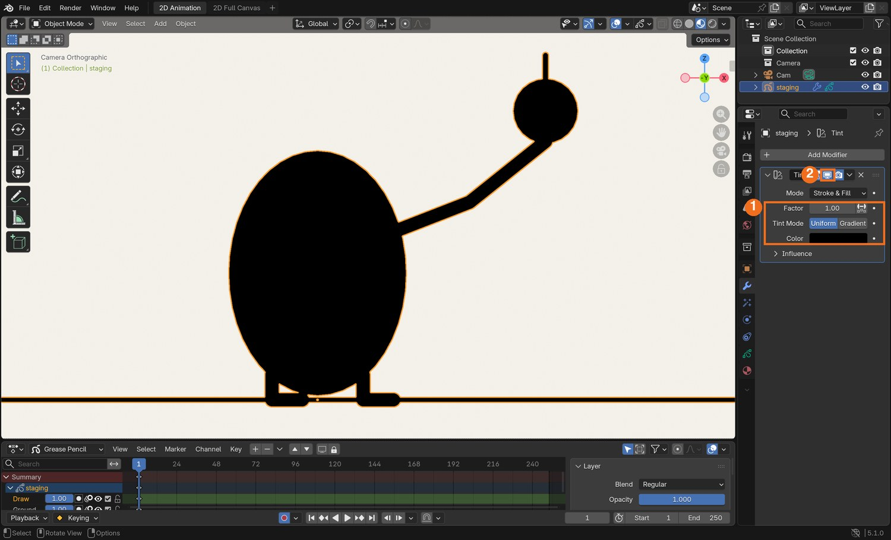
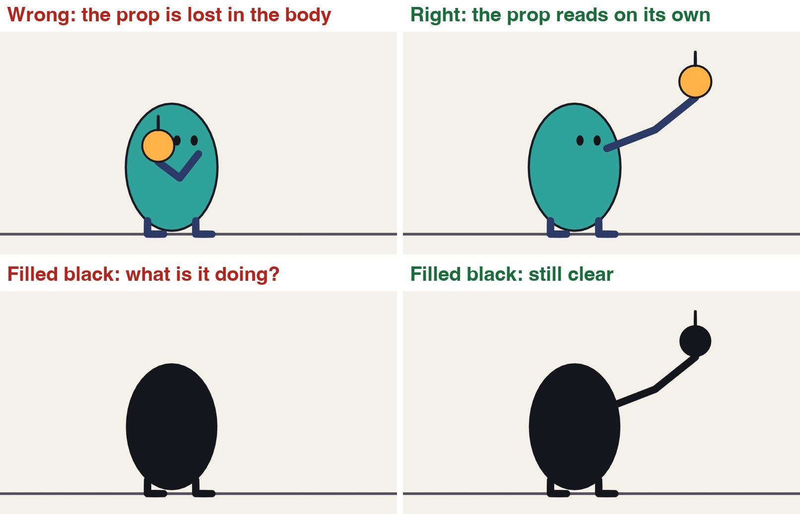

A real Grease Pencil drawing from the exaggeration demo: the top of the take.
Heavy. Soft. Loud. Clear.
Four more ideas that turn moving drawings into acting.
My supports
Turn on any help you want. Your teacher may have set some for you. They change how the guide helps, not what is assessed.
Studio brief
Four exercises and one shot.
You have done spacing, anticipation, arcs and follow-through. These four exercises add weight, volume, exaggeration and staging. Then you make one original shot and change it for a director.
You will hand in
The heavy drop and the light drop
One bounce with the volume kept
A take
A key pose and its silhouette
Your shot, the changed version, and your thumbnails
Where the ideas come from
These principles were set down by the Disney animators Frank Thomas and Ollie Johnston, and are taught in Richard Williams’s book. Every drawing and explanation here is our own.
“Animate a character lifting something heavy” is one of the most common tests studios set for junior animators. They are not looking at the drawing. They are looking at whether the timing makes them believe the weight.
Knowledge first
Why this works.
Timing shows weight
Heavy: few drawings, growing gaps, a dead stop. Light: many drawings, even gaps, drifting.
Volume shows material
Soft things change shape under force. Nothing changes size.
Exaggeration shows feeling
Find what the action is about and turn that up, with an anticipation first.
Staging shows the idea
If the pose reads as a flat black shape, it reads.
What this assesses
Skills you will show.
Skill (sprint skill ID)
Where you show it
Timing and spacing · AN-TIM-01
Steps 1, 2, 3 and 7
Acting and staging · AN-ACT-01 · AN-STG-01
Steps 4, 5, 6 and 7
Critique and refinement · GD-CRIT-01
Step 7
Primary achievement evidence: the original shot and the director’s change (step 7). Guided exercises and supports are recorded separately from achievement.
Session A · Lesson 1 · Grease Pencil
Weight is timing.
Nothing on the screen weighs anything. The audience decides how heavy a thing is from how long it takes to fall, and what happens when it lands.
TODAYWatch and compare (10 min), plan two charts (15 min), animate the two drops (35 min).
01
See weight in the spacing
Start here: read or listen to the theory deck (about 10 minutes, with checkpoint questions), then come back.
IN SHORTSame drop, different timing; heavy = few drawings, growing gaps, small bounce; light = many drawings, even gaps, drift.
READ ALOUD
DOCUMENT: This guide SELECT: Nothing yet TOOLS / ROUTE: Play · compare
Play the clip. A bowling ball and a balloon are let go at the same moment. On the left they fall the same way, so they seem to be made of the same stuff.
On the right, count the drawings each one takes to reach the ground. The bowling ball takes about five. The balloon takes about twenty.
Look at the chart. The bowling ball’s drawings get further apart as it falls: it is speeding up. The balloon’s drawings stay close together: the air holds it back.
Watch the landings. The heavy ball barely bounces and stops. The balloon touches down softly and lifts again.
Drop a real pencil case and a sheet of paper. Say out loud what is different.
The same two objects, timed without and with weight.
STEP CHECKLIST
GLOSSARY
Weight: How heavy something seems, shown by its timing and spacing
Drift: A slow sideways wander caused by air

Every drawing overlaid. Left: both objects share one set of timings. Right: the heavy ball has few, widely spaced drawings; the balloon has many, close together, drifting sideways.
WHYHeavy things are hard to start and hard to stop. Light things are pushed around by the air. Timing and spacing are how you draw that.
CHECKYou can say how many drawings each object takes to land, and why.
FIXBoth look the same to you? Step through one frame at a time with the arrow keys and watch only the gaps.
WORKED EXAMPLE · DIFFERENT OBJECTDemo timing on twos at 24 frames per second: bowling ball lands on drawing 5; balloon lands on drawing 20.
STRETCH (AFTER THE CHECK PASSES)Find slow-motion video of a feather and a hammer falling on the Moon. Why do they land together there?
Method basis: T1 · W1. Values and sequence are authored for this project.
02
Animate a heavy drop and a light drop
IN SHORTGround; heavy: growing gaps, 5–6 drawings, tiny bounce; light: ~20 drawings, small gaps, drift; check onion skin.
READ ALOUD
DOCUMENT: A new 2D Animation file SELECT: Two drops in one shot, about two seconds TOOLS / ROUTE: Draw mode · onion skin · Dope Sheet
File › New › 2D Animation. Save as Weight_YourName.blend. Draw a ground line on its own layer.
On a new layer draw a heavy object high on the left on frame 1. Your choice: an anvil, a brick, a bowling ball.
Drop it on twos. Make each gap bigger than the last. It should land in five or six drawings. Give it one very small bounce, then hold it still.
On another layer draw a light object high on the right on frame 1: a balloon, a leaf, a feather.
Drop it over about twenty drawings. Keep the gaps small and nearly equal, and let it wander left and right. Let it settle gently.
Turn on onion skin and compare your ghosts with the screenshot.
Click by click (real Blender screenshots)

The same frame with onion skin off. Without the ghosts you cannot judge spacing.
STEP CHECKLIST
GLOSSARY
On twos: One new drawing every two frames
Hold: Keeping the same drawing for several frames

Real screenshot of the demo file on frame 11 with onion skin on. The bowling ball has already landed: its ghosts are far apart. The balloon has hardly moved: its ghosts overlap.
WHYIf you only change one thing between the two objects, change the number of drawings.
CHECKTwo drops that a classmate can label “heavy” and “light” without being told.
FIXHeavy object looks floaty? Remove in-betweens near the bottom so the last gap is the biggest.
WORKED EXAMPLE · DIFFERENT OBJECTIn the demo the bowling ball bounces to about a fifth of its own height; the balloon rebounds higher than that, slowly.
STRETCH (AFTER THE CHECK PASSES)Make the ground react: a crack or a puff of dust for the heavy one only.
Method basis: W1 · B1 · B3. Values and sequence are authored for this project.
Session B · Lesson 2 · Grease Pencil
Squash and stretch, without cheating.
A soft thing changes shape when it hits something or moves fast. It must never change size.
TODAYWatch and compare (10 min), animate one bounce (40 min), check volume (10 min).
03
Keep the volume the same
Recall first (from last lesson, no peeking):
What tells an audience that a drawn object is heavy?
How does a light object’s spacing differ from a heavy one’s as it falls?
What does “on twos” mean?
Say or write your answers, then check them against your file.
IN SHORTStretch with speed; squash only on contact; wider means shorter; longer means thinner.
READ ALOUD
DOCUMENT: Weight_YourName.blend · a new layer SELECT: One bounce across the screen, 13 drawings TOOLS / ROUTE: Draw · Edit mode scale · onion skin
Play the clip. On the left the ball gets wider when it lands but hardly any shorter, and longer in the air but no thinner. It looks like it is being inflated.
On the right, every time it gets wider it gets shorter by the same amount. Every time it gets longer it gets thinner.
Draw a ball at the top left on frame 1, and the contact drawing on the ground in the middle on frame 13.
Draw the in-betweens on an arc. Stretch the ball along its path as it speeds up towards the ground.
On the contact drawing, squash it flat and wide. On the very next drawing it is stretched again, going up.
Volume check: in Edit mode select one drawing and scale it with S, Z to squash. Whatever you take off the height, add to the width.
One bounce, with the volume changing and with it kept the same.
STEP CHECKLIST
GLOSSARY
Squash: A shape pressed flatter and wider by a force
Stretch: A shape pulled longer and thinner by speed

Left: the ball swells on contact and grows in the air. Right: the same bounce with the volume kept constant.
WHYSquash and stretch shows that something is soft and that a force acted on it. If the volume changes, it reads as growing or shrinking, not as force.
CHECKA bounce where the ball looks the same size in every drawing, even though its shape changes.
FIXNot sure about volume? Half as tall means twice as wide. Three-quarters as tall means about one and a third times as wide.
WORKED EXAMPLE · DIFFERENT OBJECTDemo values: the contact drawing is 58 % as tall and 172 % as wide; the fastest drawing is 145 % as tall and 69 % as wide.
STRETCH (AFTER THE CHECK PASSES)Bounce a bowling ball instead: no squash at all. What tells the audience it is hard?
Method basis: T1. Values and sequence are authored for this project.
Session C · Lesson 3 · Grease Pencil
Exaggeration and staging.
Real movement copied exactly looks stiff on screen. Push it further than life, and make sure the audience can read it in a single glance.
TODAYThe take (35 min), the silhouette test (25 min).
04
Push a reaction further than real life
Recall first (from last lesson, no peeking):
When a ball squashes wider, what else must happen?
On which drawing of a bounce is the squash?
What does a changing volume look like to the audience?
Say or write your answers, then check them against your file.
IN SHORTHold; anticipation down; fast stretch up; hold with a wobble; settle part-way.
READ ALOUD
DOCUMENT: Weight_YourName.blend · a new layer SELECT: A two-second “take”: your character notices something TOOLS / ROUTE: Draw · onion skin
Play the clip. Both characters notice the glowing thing. On the left the reaction is the size a real person’s might be. It hardly reads.
On the right, find three parts: the character sinks down first, then shoots up tall with wide eyes, then settles.
Draw a simple character on frame 1, looking at nothing. Hold it for about ten frames.
The anticipation: three or four drawings sinking down and squashing. Eyes narrow.
The take: two or three drawings stretching up to about one and three-quarter times the height. Eyes large, mouth open.
Hold the top for a few frames with a small wobble, then settle back, but not all the way: it is still surprised.
A realistic reaction against an exaggerated one.
Click by click (real Blender screenshots)

Real screenshot of the demo file on frame 11: the anticipation. The onion skin shows the character sinking before it shoots up.
What went wrong when we built the demo: our first version of the take went straight up with no sink first. It looked like the character was being inflated. Adding four drawings of going down made the same stretch read as surprise.
STEP CHECKLIST
GLOSSARY
Take: A character’s big reaction to something it has just seen
Exaggeration: Pushing a pose or a movement further than real life so that it reads

Left: a realistic reaction. Right: the same reaction exaggerated, with the drawings overlaid. Down first, then up.
WHYExaggeration is not distortion for its own sake. You find what the action is about, and you turn that up.
CHECKA take that someone across the room can read with the sound off.
FIXLooks rubbery instead of surprised? Shorten the take to two drawings and lengthen the hold at the top.
WORKED EXAMPLE · DIFFERENT OBJECTDemo timing: 10 frames still, 10 frames sinking, 10 frames shooting up, 8 frames held, 10 frames settling.
STRETCH (AFTER THE CHECK PASSES)Do a “double take”: a small look, a look away, then the big one.
Method basis: T1 · W1. Values and sequence are authored for this project.
05
Stage the pose: the silhouette test
IN SHORTKey pose; Tint modifier black, Factor 1; read it; move parts into clear space; modifier off.
READ ALOUD
DOCUMENT: Weight_YourName.blend SELECT: One key pose, checked as a flat black shape TOOLS / ROUTE: Modifiers › Tint · Draw
Look at the four pictures. In the top left the character holds something, but its arm and the object are in front of its body.
Bottom left is the same drawing filled black. You cannot tell it is holding anything.
On the right the arm reaches out to the side. Filled black, you can still read the whole idea.
Pick the most important drawing in your take. Select the Grease Pencil object, open the Modifiers tab, and choose Add Modifier, then Tint (in the Modify column).
Set the Tint colour to black and Factor to 1. Your drawing is now a silhouette.
If you cannot read the pose, redraw it: move arms, props and faces out to where there is empty space behind them. Then turn the modifier off (the screen icon).
Click by click (real Blender screenshots)

Real screenshot: the Modifiers tab. Click Add Modifier (1); the menu opens; choose Tint (2).

Real screenshot: Tint set to black with Factor 1 (1). The drawing is now a silhouette. The screen icon (2) turns the modifier off again in the viewport.
STEP CHECKLIST
GLOSSARY
Staging: Presenting an idea so that it is completely and unmistakably clear
Silhouette: The outline of a pose filled with one flat colour

Top: the same character and prop, staged badly and staged clearly. Bottom: both filled black. Only one survives.
WHYThe audience has about a second per pose. A pose that works as a flat shape is read instantly.
CHECKA key pose that still tells the story as a black shape.
FIXTint does nothing? Check the modifier is on the Grease Pencil object you are looking at, and that Factor is 1.
WORKED EXAMPLE · DIFFERENT OBJECTIn the demo only the arm changed between the two versions: no other line was redrawn.
STRETCH (AFTER THE CHECK PASSES)Flip the canvas (View › Mirror, or look at it in a mirror). Weak poses show up straight away.
Method basis: T1 · B2. Values and sequence are authored for this project.
Session E · Lesson 4 · Grease Pencil
Put it in a shot.
One short original shot that uses weight, squash and stretch, exaggeration and staging, then a director’s change.
Say or write your answers, then check them against your file.
IN SHORTIdea; four poses; silhouette check; timing under each; mark the principles.
READ ALOUD
DOCUMENT: Paper · thumbnails.txt from the templates SELECT: Four small pose drawings and a timing note for each TOOLS / ROUTE: Pencil and paper
Idea: a character meets an object that is much heavier, or much lighter, than it expected. Make up your own character.
Draw four thumbnails the size of a matchbox: before, the surprise, the struggle, the result.
Fill each thumbnail in black on a second copy. Fix any pose that does not read.
Under each one write how many frames it holds and how many drawings it takes to get to the next.
Mark where squash, stretch and the biggest exaggeration will be.
STEP CHECKLIST
GLOSSARY
Thumbnail: A very small, quick planning drawing
Pose to pose: Drawing the key poses first and filling the in-betweens afterwards
WHYThumbnails cost a minute each. Animating a pose that does not read costs the lesson.
CHECKFour thumbnails with timings, each readable as a silhouette.
FIXNo idea? Lifting a box that turns out to be empty. Catching a balloon that turns out to be full of water.
WORKED EXAMPLE · DIFFERENT OBJECTA two-second action is 48 frames, or 24 drawings on twos.
STRETCH (AFTER THE CHECK PASSES)Shoot your thumbnails as a four-drawing animatic first.
Method basis: T1 · W1. Values and sequence are authored for this project.
07
Practical check: the shot and the director’s note
IN SHORTKeys; in-betweens; render; director’s card; smallest change that answers it; point to the frames.
READ ALOUD
DOCUMENT: Weight_Shot_YourName.blend SELECT: A five- to six-second original shot, then a changed version TOOLS / ROUTE: Everything in this guide · your own decisions
Animate your shot on twos from your thumbnails. Keys first, then in-betweens.
It must show: one object whose weight is clear from its timing; squash or stretch with the volume kept; one exaggerated reaction; key poses that pass the silhouette test.
Render it: Render › Render Animation, as an MP4.
Your teacher gives you one director’s card from the table. Save a new version and make the change. Decide for yourself which drawings must be redone.
In your evidence, name the frame that shows each principle, and say what the card made you change.
Card
The director says
1 · Swap the weights
“The heavy thing is now light and the light thing is heavy. Same drawings where you can.”
2 · It is made of jelly
“Everything about the object is soft now.”
3 · Bigger
“I do not believe the reaction. Twice as big, no longer.”
4 · From across the street
“I must be able to read it at postage-stamp size.”
Independent evidence: the main achievement evidence for this tutorial.
STEP CHECKLIST
GLOSSARY
Key pose: A drawing that tells the story on its own
Version: A saved copy you can go back to
WHYA director’s note is rarely “redraw everything”. Finding the smallest change that answers it is the skill.
CHECKAn original shot, a changed version, and a frame you can point to for each principle.
FIXStuck on which drawings to change? Ask which principle the card is really about. (Independent step: the Coach can explain tools but not decide your drawings.)
WORKED EXAMPLE · DIFFERENT OBJECTWorked example on a different shot: “it is made of glass” meant no squash at all, a harder stop, and a longer hold before the reaction.
STRETCH (AFTER THE CHECK PASSES)Add a second character who reacts to the first, half a second later.
Method basis: T1 · W1. Values and sequence are authored for this project.
Before you submit
Student QA.
Evidence conversation
Keep it short and specific.
SENTENCE FRAMESMy heavy object lands in ___ drawings because ___. · The silhouette did not read until I ___. · For the director’s card I changed ___.
J1 Blain, J. M. Blender 2D Animation: The Complete Guide to the Grease Pencil. Tool reference (background reading; not reproduced here). https://www.routledge.com/
Figures marked Illustration are drawn, not screenshots. Step values are starting points authored for this project. Draft for teacher review; not yet classroom-piloted.